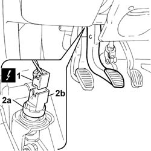
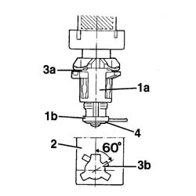

5550D10 brake light switch - r+r
- Path
- Procedures > 55 ELECTRICAL EQUIPMENT > 5550 MANOEUVRING AND WARNING SIGNALS > 5550D brake and reversing lights > 5550D10 brake light switch - r+r
- Kind
- repair procedure (removal / refitting; the operation number is the code)
- Applies to
- all engines; all production periods
- Interactive page
- https://sloeber94.github.io/elrnDB-fDbl/en/#/2584956
Applies to: all engines; all production periods
 Removing
Removing
 Refitting
RefittingDisconnect the battery negative terminal.
1. Disconnect the electrical connection from the switch on the brake pedal.
 | Name | Connector |
|---|---|---|
1 | Brake pedal switch |
2. Using an ordinary spanner on the hexagonal section (2a) of the switch, rotate the switch (2b) anti-clockwise by about 60 degrees and withdraw it.

Applies to: all engines; all production periods
Refitting
Removing1. Prepare the switch complete with bush (1a) and spacer (1b).
2. Keep the brake pedal pressed and insert the switch in position on the bracket.
3. Rotate the switch by about 60 degrees until the retaining lug (3a) engages in its seating (3b).
Release the brake pedal until it is in the rest position, then pull it further upwards until the switch is automatically positioned in relation to the bush.
4. Press the pedal in order to be able to remove the service spacer.
The service spacer releases an internal stop tooth which prevents any further movement between the switch and the bush.

Applies to: all engines; all production periods
Connect the battery's negative terminal and check that the stop lights switch is working properly.